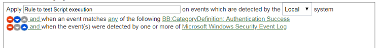
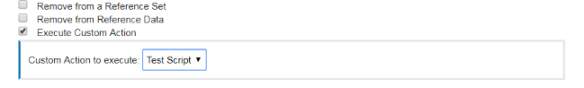
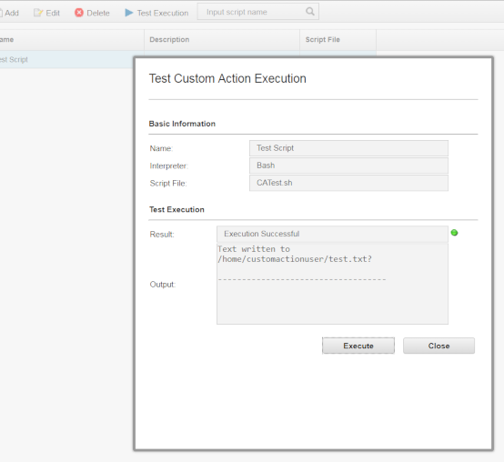
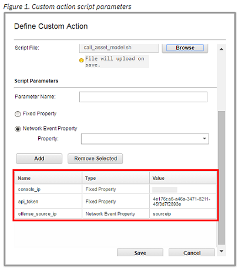
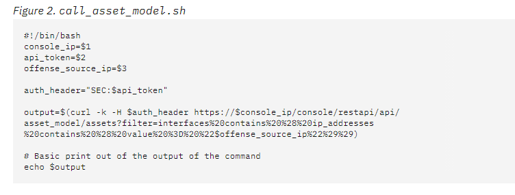
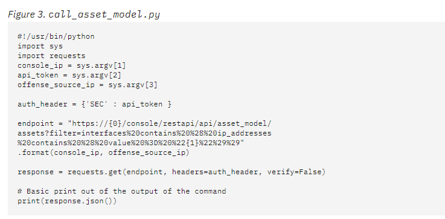
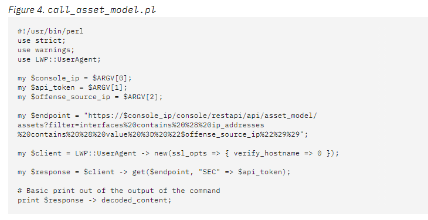

Exercise 1.3 - Configuring QRadar to Generate Events, Offenses and Run Ansible playbooks
Objectives
The objective of this part is to introduce you to the use of IBM QRadar and showcase event and offense generation, plus creation of customs rules that can be triggered to remediate issues, as part of an incident response strategy.
Step 3.1 - IBM QRadar WebUI
To showcase how to automate a SIEM in a security environment, this lab contains a IBM QRadar SIEM, community edition.
The SIEM can be accessed via web UI and via REST API. In this lab the playbooks we write will be interacting with the API in the background. All actions will be verified in the web UI.
Step 3.2 - Access the web UI
Have a first look at the SIEM, and verify that it is actually working. Point your web browser towards https://<qradar-IP>, where <qradar-IP> is the IP address for the qradar entry in your siem section
of your inventory. Next you will be faced with a warning that the certificate is unsecure since it is self-signed. Please accept this and
proceed.
Note
In a production environment, accepting a insecure certificate would not be an option. Since the lab setup is only short lived and solely serves a demo purpose we accept the risk in this case.
In the login field, provide the username admin and the password Ansible1! if not provided otherwise. Press the Login button.
You are now viewing the IBM QRadar main web interface.

To get an idea of QRadar and the basic concepts, let’s have a short look at the interface: in the upper part there is a navigation bar with multiple entry points into the main parts of QRadar.
- Dashboard, providing a central overview
- Offenses, messages or events generated by a monitored condition
- Log Activity, showing collected events from log sources
- Network Activity, network traffic communication between certain hosts
- Assets, automatically created profiles of network devices and hosts in your environment
- Reports, customized or standard reports to, well, report what happens in your environment
For the purpose of the demo, we will have a closer look at the Offenses: click on the menu item. In the new window, you will see a navigation bar on the left side to filter the offenses.

Note
Since this is a demo environment, it is likely that the list of offenses is currently empty.
Offenses are messages or events generated based upon findings in log messages or network traffic, like a malicious log line. QRadar triggers offenses based on rules: the rules describe conditions, and when a condition is met, the offense is the result.
To say it with the words of the official documentation:
Rules, sometimes called correlation rules are applied to events, flows, or offenses to search for or detect anomalies. If all the conditions of a test are met, the rule generates response. (QRadar documentation)
In a productive environment it is common to create more and more custom rules over time. But for now, let’s have a look at the rules
which are already installed on the system: in the Offenses window, on the left side in the navigation bar, click on
Rules. A long list of rules is displayed. In the search bar on top of this list, enter the following search term:
DDoS Hit enter afterwards to filter the list.
The list is filtered, and only shows few rules which are related to DDOS. Click the one called “Potential DDoS Against Single Host (TCP)”, note that it is enabled. This will be relevant later in this exercise.

Step 3 - Create a QRadar Custom Action Script
Incident Remedition happens in QRadar when some events create an offense, and we do something about it. We can attach scripts to custom rules to do specific actions in response to network events. Use the Custom Action window to manage custom action scripts. Use custom actions to select or define the value that is passed to the script and the resulting action.
For example, you can write a script to create a firewall rule that blocks a source IP address from your network in response to a rule that is triggered by a defined number of failed login attempts.
The following examples are custom actions that are the outcomes of passing values to a script:
- Block users and domains.
- Initiate work flows and updates in external systems.
- Re-start existing services that have stopped or crashed.
- Disables a user account on suspicious privileged activity
As a matter of fact, we can remediate all these QRadar Use Cases
Custom actions work best with low volume custom rule events and with custom rules that have a low response limiter value.
This does not come defaulted in Qradar, to use this capability, a Custom Action Script needs to be created and a Custom Rule can be configured to fire the Custom Action Script. When the Rule is triggered, there will be no clear indication that the Custom Action Script is running. But we can test the script.
The purpose of the provided sample script is to write a file named test.txt each time all rule tests are matched in a sample rule.
- Create a file with a .sh extension using the provided sample script:
#!/bin/bash datetime="$(date)" echo " Custom Action Script Test Time: $datetime" >> /home/customactionuser/test.txt echo "Text written to /home/customactionuser/test.txt?" - Log in to the QRadar user interface and click the Admin tab.
- Under Custom Action, click Define Custom Action.
- To upload your scripts, click Add.
- Type a descriptive name for the custom action.
- Scroll down to Script configuration and Select Interpreter: Bash.
- Click Browse and locate the .sh file.
- Scroll to the bottom of the Define Custom Action window > click Save.
- Click Deploy Changes.
Step 4 - Edit or create a rule to trigger your custom action
- Log in to the QRadar user interface.
- Click Offense tab > Rules.
- Locate or create a Custom Rule in the Rule Wizard that can be triggered easily.
Tip: An example rule to test a custom action might be to use an authentication event from your existing log sources or you could use a specific QID, such as the Offense Created QID (28250369) to test your custom action. - Edit the Rule to add the Host IP and a criteria such as successful login.
Example of a rule.
 - Click Next to configure Rule Responses
- Check the box next to 'Execute Custom Action'
- Click the newly created Custom Action Script in the 'Custom Action to execute' drop down box.

Step 5 - Confirm your custom action script triggers
Either by using "Test Execution" in the Define Actions window, or by confirming the Custom Rule has been triggered, verify the test file is created or updated:
To test your custom action in the user interface- Click the Admin tab.
- Scroll to down to Custom Actions.
- Click Define Actions.
- Highlight the test script.
- Click Test Execution > Execute.

- Create an event to cause the custom rule to trigger.
- If you have your own environment, use SSH to log in to the Console as the root user. You can't do this with the Lab environment, as you do not have root ssh access
- To enter the shell to see the folder customactionuser use the chroot command:
chroot --userspec=customactionuser /opt/qradar/bin/ca_jail/ - Use the ls command to see if the file exists:
ls -lh /home/customactionuser/ - While in the chroot'ed shell, the file test.txt should be seen.
chroot --userspec=customactionuser /opt/qradar/bin/ca_jail/ $ ls /home/customactionuser/ test.txt?
The file test.txt should exist in the /home/customactionuser/ directory. The purpose of the sample script is to write test.txt each time the rule response is triggered by a rule.
Step 5- Passing parameters to a custom action script
The following information is taken from this link. Go there if need to copy and paste the scripts as text.
We are not going to exercise these scripts on this Lab, therefore the following is just FYI.
The Custom Action script functionality in QRadar was intended to allow admins to generate rule responses based off of data ingested in QRadar. However, QRadar prevents scripts taking actions on the box that would cause performance issues or to make changes on the appliance. All Custom Actions run within a jailshell, so you can pass data out of QRadar by setting parameters.
The Scripts can be written in Bash, Python, and Perl. Here we how how to pass parameters to custom action scripts.
The following simple sample scripts show how to query the asset model API for an asset with the supplied offense source IP address. For the sake of this example, the scripts output the JSON that is returned by the endpoint.
The scripts require three parameters:
- Console IP address.
- API token.
- Offense source IP address.
These parameters are configured in the Define Custom Action window Script Parameters area: 
Each parameter is passed to the script in the order in which it was added in the Define Custom Action window. In this case:
- console_ip.
- api_token.
- offense_source_ip.
The API token was covered in the prev. exercise, we said you need to configure QRadar for the API to be accessible, and that a token and password is created following the steps in the IBM X-Force Exchange API Documentation
The variables that are defined at the beginning of each of the sample scripts use the sample parameter names that were added in the Define Custom Action window.   
You are done with the exercise. You can now turn back to the list of exercises or continue with 1.4, which is the last exercise of section 1